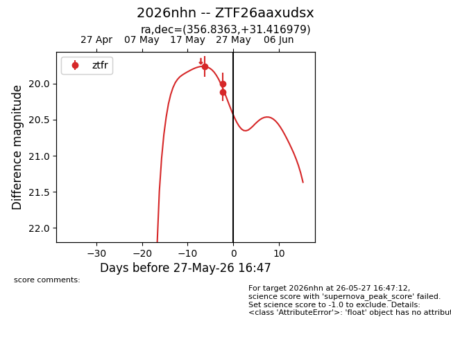
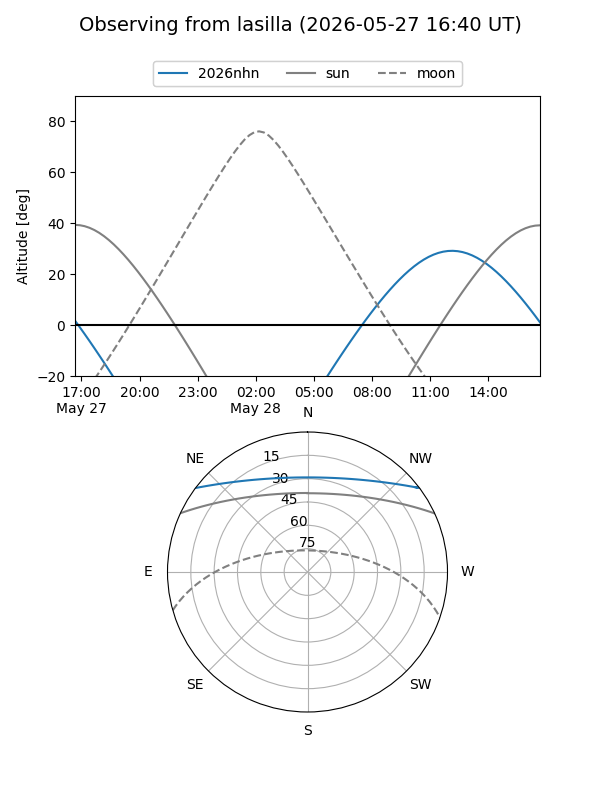
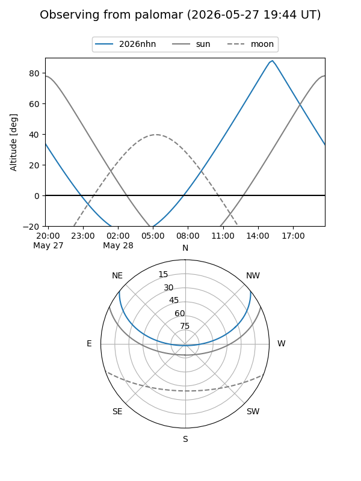
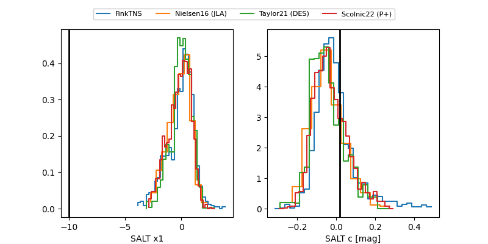

2026nhn
Target 2026nhn at 2026-05-27 16:48
Aliases and brokers:
lsst-FINK: link
lsst-Lasair: link
lsst-ALeRCE: link
ztf-FINK: link
ztf-Lasair: link
ztf-ALeRCE: link
TNS: link
YSE: link
alt names
ZTF26aaxudsx (ztf,fink_ztf)
2026nhn (tns,yse)
Coordinates:
equatorial (ra, dec) = 356.8363,+31.41698
equatorial (HMS+DMS) = 23:47:20.70,+31:25:01.13
galactic (l, b) = (107.2302,-29.49306)
Flags:
TNS confirmed: nan
Photometry:
last ztfr=20.00
3 ztfr detections
Lightcurve

Visibility


Additional plots
